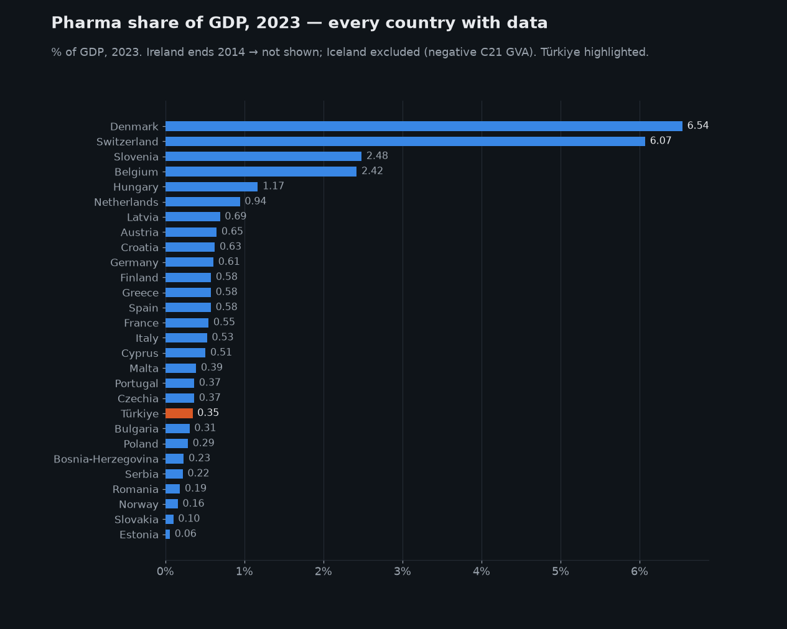

The pharma states of Europe. Thirty years of pharma's share of GDP.
How big is the pharmaceutical industry inside a national economy — and does thirty years change the answer? I pulled Eurostat's national accounts for 30 European countries, 1995–2025: pharma manufacturing value added, total GDP, and total manufacturing, all in each country's own currency so no exchange rate touches the ratio. The answer splits Europe into two entirely different stories.
1. Two Europes — the flat mass and the risers
Start with the whole picture: every country's pharma manufacturing value added as a share of its own GDP, every year since 1995.

The grey mass is the honest headline for most of the continent: in the median European country pharma manufacturing is about half a percent of GDP — 0.54% in 2023 — and that number has barely moved in thirty years. The big four economies are all in the mass: Germany went 0.52% → 0.61% since 1995, France 0.60% → 0.55%, Italy 0.50% → 0.53%, Spain 0.54% → 0.58%. Thirty years of blockbuster drugs, biotech waves and COVID, and pharma's weight in Europe's large economies is exactly where it started.
And then there are the risers. Denmark went from 0.8% of GDP to 8.7% — a tenfold gain in weight, with more than half of it arriving in just three years (+35%, +49%, +35% year-on-year growth in pharma value added in 2022–24 — the GLP-1/Ozempic years). Switzerland climbed from 2.1% to 6.7% over the same period — slower, steadier, and driven by two giants rather than one. Slovenia (2.7%) and Belgium (2.3%) are the quieter members of the club.
2. The full ranking — where every country stands
The most recent year with data for nearly everyone is 2023. Ranked:

Two countries sit above 6%; two more above 2%; everyone else is below 1.2%. Türkiye enters at 0.35% of GDP — mid-table in absolute size (€3.6bn of pharma value added, more than Austria or Poland) but bottom-third in weight, and 1.8% of its manufacturing sector. One important honesty note: TurkStat delivered this detail to Eurostat for 2023 only, so Türkiye appears in the snapshot but cannot appear in any trajectory in this study.
3. The sharper lens — pharma as a share of all manufacturing
Share of GDP understates how concentrated this story is, because GDP is mostly services everywhere. Divide pharma by manufacturing value added instead and the concentration becomes hard to overstate:

4. Size is not weight — the Germany paradox
A ranking by share hides that the biggest pharma producers are still the big economies. Put absolute size (in euros, log scale) against weight in the domestic economy:

In 2023 Germany and Denmark produced almost exactly the same amount of pharma value added — €26bn and €24bn. In Germany that is 0.61% of the economy; in Denmark it is 6.5%. The exact same industry is a rounding error in one country and the national growth engine in another. That asymmetry — not the size of the industry — is what decides how much a country's macro numbers, currency and politics move when one molecule succeeds or fails.
What to do with this — three readings
- If you analyse economies: never quote "pharma's share of GDP" as one European number — the median (0.54%) and the pharma states (6–9%) are different universes. And check Denmark-style concentration before trusting any Danish, Swiss or Irish macro aggregate: through 2026, ex-pharma GDP is the more informative series. What would change this: two consecutive years of Danish pharma GVA growing slower than Danish GDP.
- If you work in pharma strategy: the risers are supply-side stories — a country can multiply its pharma weight in a decade (Denmark did it twice over). Watch Slovenia and Hungary as the next candidates: both already carry 2–7× the manufacturing share of their GDP peers. What would change this: C21 share of manufacturing stalling below 15% for Slovenia through 2027.
- If you read this from Türkiye: the single published data point says the sector is mid-sized in euros but underweight at home (0.35% of GDP vs the 0.54% median) — and the more actionable gap is statistical: one year of data means no trajectory, no trend, no case. The first ask is for TurkStat to publish the C21 back-series; the growth argument can only be made after it exists.
Sources. Eurostat nama_10_a64 (gross value added by
A*64 industry, NACE C21 = manufacture of basic pharmaceutical products and
pharmaceutical preparations; and NACE C = total manufacturing) and
nama_10_gdp (GDP at market prices), annual, current prices, million
units of national currency; EUR versions used only for cross-country size, never
for shares. Span used: 1995–2025 (2024–25 values are first releases and may be
revised). Data fetched 4 Aug 2026 via scripts/fetch.py; every figure
on this page is reproducible from data/pharma-share.json in this
repository.
Caveats — read before quoting. NACE C21 is pharma manufacturing only: it excludes pharmacies, wholesale, and R&D booked in separate service-sector entities, so this measures where pharma production value sits, not the industry's full footprint. No deflator is needed — each share is nominal-over-nominal in the same currency, so inflation and exchange rates cancel. Denmark's figures include value added from production Danish companies contract out abroad ("factoryless" production counts in Danish national accounts) — the share is genuinely in Danish GDP, but the factories are not all in Denmark. Ireland: Eurostat suppresses C21 after 2014 (confidentiality — the sector is dominated by a handful of firms); its dashed line ends honestly. Iceland: published C21 value added is negative from 2017 and is excluded. Türkiye: 2023 only, as delivered to Eurostat. Norway's coverage starts 1975 but its pharma sector is tiny (0.16%).
Want the pipeline, or this analysis for another sector? Get in touch.